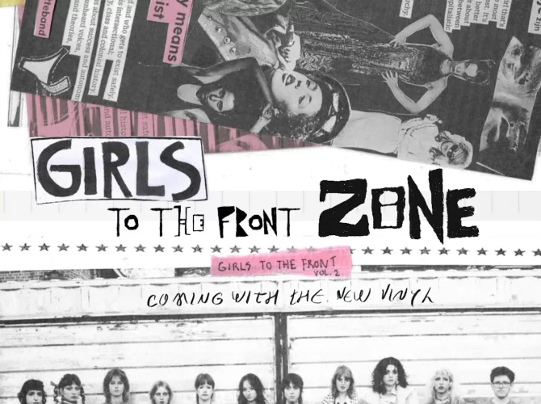

Feminist punk zines, uncensored voices.
Using festival bio due to a lack of publicly available data
Calling all FLINTA people! In this hands-on masterclass, you'll learn all about zines—homemade mini-magazines that have played a key role in activism and feminism since the invention of scissors and glue sticks. And for good reason, because with zines, you can make your voice heard without compromise—your voice, your way, uncensored, as loud or soft as you want. In HOLDING, you'll soon hear all the ins and outs from various feminist collectives, including Girls to the Front. This Utrecht-based initiative is steadily building a thriving FLINTA* community in the Dutch punk scene through interdisciplinary events and kick-ass punk compilations. Their ideal: a world where everyone can mosh freely without worrying about dick energy, big or small. You’ll also experience just how liberating that can be during the dedicated Girls to the Front edition of the brand-new nightlife program Nachttrein.
Friday, July 03
11:30 - 12:30
HOLDING